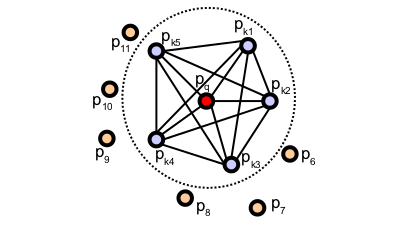

Point Feature Histograms (PFH) descriptors
As point feature representations go, surface normals and curvature estimates are somewhat basic in their representations of the geometry around a specific point. Though extremely fast and easy to compute, they cannot capture too much detail, as they approximate the geometry of a point’s k-neighborhood with only a few values. As a direct consequence, most scenes will contain many points with the same or very similar feature values, thus reducing their informative characteristics.
This tutorial introduces a family of 3D feature descriptors coined PFH (Point Feature Histograms) for simplicity, presents their theoretical advantages and discusses implementation details from PCL’s perspective. As a prerequisite, please go ahead and read the Estimating Surface Normals in a PointCloud tutorial first, as PFH signatures rely on both xyz 3D data as well as surface normals.
Theoretical primer
The goal of the PFH formulation is to encode a point’s k-neighborhood geometrical properties by generalizing the mean curvature around the point using a multi-dimensional histogram of values. This highly dimensional hyperspace provides an informative signature for the feature representation, is invariant to the 6D pose of the underlying surface, and copes very well with different sampling densities or noise levels present in the neighborhood.
A Point Feature Histogram representation is based on the relationships between the points in the k-neighborhood and their estimated surface normals. Simply put, it attempts to capture as best as possible the sampled surface variations by taking into account all the interactions between the directions of the estimated normals. The resultant hyperspace is thus dependent on the quality of the surface normal estimations at each point.
The figure below presents an influence region diagram of the PFH computation for a query point (p_q), marked with red and placed in the middle of a circle (sphere in 3D) with radius r, and all its k neighbors (points with distances smaller than the radius r) are fully interconnected in a mesh. The final PFH descriptor is computed as a histogram of relationships between all pairs of points in the neighborhood, and thus has a computational complexity of O(k^2).
To compute the relative difference between two points p_i and p_j and their associated normals n_i and n_j, we define a fixed coordinate frame at one of the points (see the figure below).
{\mathsf u} =& \boldsymbol{n}_s \\ {\mathsf v} =& {\mathsf u} \times \frac{(\boldsymbol{p}_t-\boldsymbol{p}_s)}{{\|\boldsymbol{p}_t-\boldsymbol{p}_s\|}_{2}} \\ {\mathsf w} =& {\mathsf u} \times {\mathsf v}

Using the above uvw frame, the difference between the two normals n_s and n_t can be expressed as a set of angular features as follows:
\alpha &= {\mathsf v} \cdot \boldsymbol{n}_t \\ \phi &= {\mathsf u} \cdot \frac{(\boldsymbol{p}_t - \boldsymbol{p}_s)}{d}\\ \theta &= \arctan ({\mathsf w} \cdot \boldsymbol{n}_t, {\mathsf u} \cdot \boldsymbol{n}_t) \\
where d is the Euclidean distance between the two points \boldsymbol{p}_s and \boldsymbol{p}_t, d={\|\boldsymbol{p}_t-\boldsymbol{p}_s\|}_2. The quadruplet \langle\alpha, \phi, \theta, d\rangle is computed for each pair of two points in k-neighborhood, therefore reducing the 12 values (xyz and normal information) of the two points and their normals to 4.
To estimate a PFH quadruplet for a pair of points, use:
computePairFeatures (const Eigen::Vector4f &p1, const Eigen::Vector4f &n1,
const Eigen::Vector4f &p2, const Eigen::Vector4f &n2,
float &f1, float &f2, float &f3, float &f4);
See the API documentation for additional details.
To create the final PFH representation for the query point, the set of all quadruplets is binned into a histogram. The binning process divides each features’s value range into b subdivisions, and counts the number of occurrences in each subinterval. Since three out of the four features presented above are measure of the angles between normals, their values can easily be normalized to the same interval on the trigonometric circle. A binning example is to divide each feature interval into the same number of equal parts, and therefore create a histogram with b^4 bins in a fully correlated space. In this space, a histogram bin increment corresponds to a point having certain values for all its 4 features. The figure below presents examples of Point Feature Histograms representations for different points in a cloud.
In some cases, the fourth feature, d, does not present an extreme significance for 2.5D datasets, usually acquired in robotics, as the distance between neighboring points increases from the viewpoint. Therefore, omitting d for scans where the local point density influences this feature dimension has proved to be beneficial.
Note
For more information and mathematical derivations, including an analysis of PFH signatures for different surface geometries please see [RusuDissertation].
Estimating PFH features
Point Feature Histograms are implemented in PCL as part of the pcl_features library.
The default PFH implementation uses 5 binning subdivisions (e.g., each of the four feature values will use this many bins from its value interval), and does not include the distances (as explained above – although the computePairFeatures method can be called by the user to obtain the distances too, if desired) which results in a 125-byte array (3^5) of float values. These are stored in a pcl::PFHSignature125 point type.
The following code snippet will estimate a set of PFH features for all the points in the input dataset.
1 2 3 4 5 6 7 8 9 10 11 12 13 14 15 16 17 18 19 20 21 22 23 24 25 26 27 28 29 30 31 32 33 | #include <pcl/point_types.h>
#include <pcl/features/pfh.h>
{
pcl::PointCloud<pcl::PointXYZ>::Ptr cloud (new pcl::PointCloud<pcl::PointXYZ>);
pcl::PointCloud<pcl::Normal>::Ptr normals (new pcl::PointCloud<pcl::Normal> ());
... read, pass in or create a point cloud with normals ...
... (note: you can create a single PointCloud<PointNormal> if you want) ...
// Create the PFH estimation class, and pass the input dataset+normals to it
pcl::PFHEstimation<pcl::PointXYZ, pcl::Normal, pcl::PFHSignature125> pfh;
pfh.setInputCloud (cloud);
pfh.setInputNormals (normals);
// alternatively, if cloud is of tpe PointNormal, do pfh.setInputNormals (cloud);
// Create an empty kdtree representation, and pass it to the PFH estimation object.
// Its content will be filled inside the object, based on the given input dataset (as no other search surface is given).
pcl::KdTreeFLANN<pcl::PointXYZ>::Ptr tree (new pcl::KdTreeFLANN<pcl::PointXYZ> ());
pfh.setSearchMethod (tree);
// Output datasets
pcl::PointCloud<pcl::PFHSignature125>::Ptr pfhs (new pcl::PointCloud<pcl::PFHSignature125> ());
// Use all neighbors in a sphere of radius 5cm
// IMPORTANT: the radius used here has to be larger than the radius used to estimate the surface normals!!!
pfh.setRadiusSearch (0.05);
// Compute the features
pfh.compute (*pfhs);
// pfhs->points.size () should have the same size as the input cloud->points.size ()*
}
|
The actual compute call from the PFHEstimation class does nothing internally but:
for each point p in cloud P
1. get the nearest neighbors of p
2. for each pair of neighbors, compute the three angular values
3. bin all the results in an output histogram
To compute a single PFH representation from a k-neighborhood, use:
computePointPFHSignature (const pcl::PointCloud<PointInT> &cloud,
const pcl::PointCloud<PointNT> &normals,
const std::vector<int> &indices,
int nr_split,
Eigen::VectorXf &pfh_histogram);
Where cloud is the input point cloud that contains the points, normals is the input point cloud that contains the normals (could be equal to cloud if PointInT=PointNT=PointNormal), indices represents the set of k-nearest neighbors from cloud, nr_split is the number of subdivisions to use for the binning process for each feature interval, and pfh_histogram is the output resultant histogram as an array of float values.